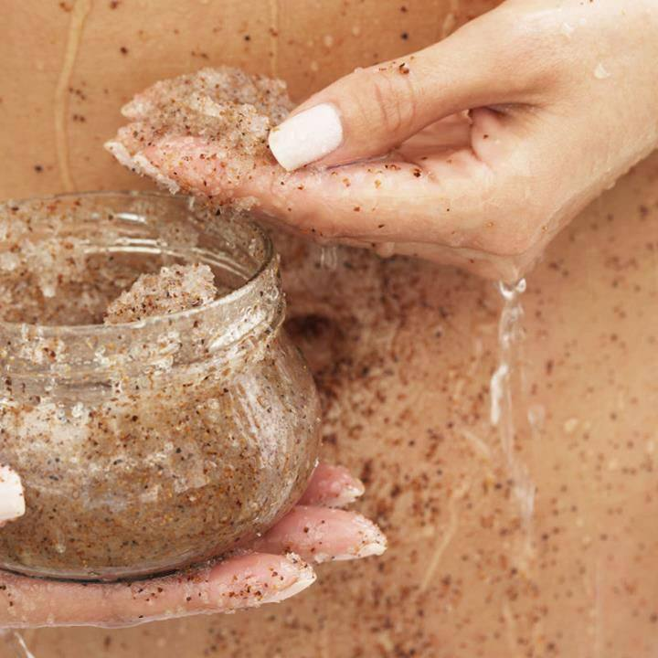
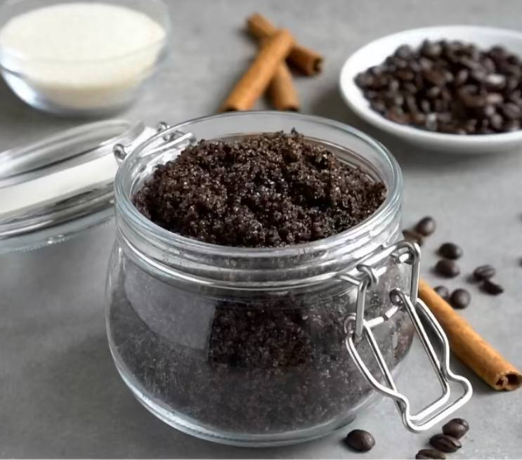
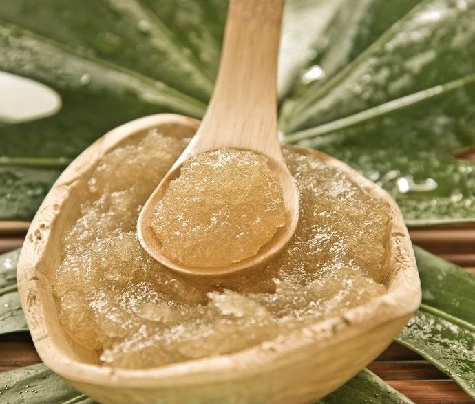
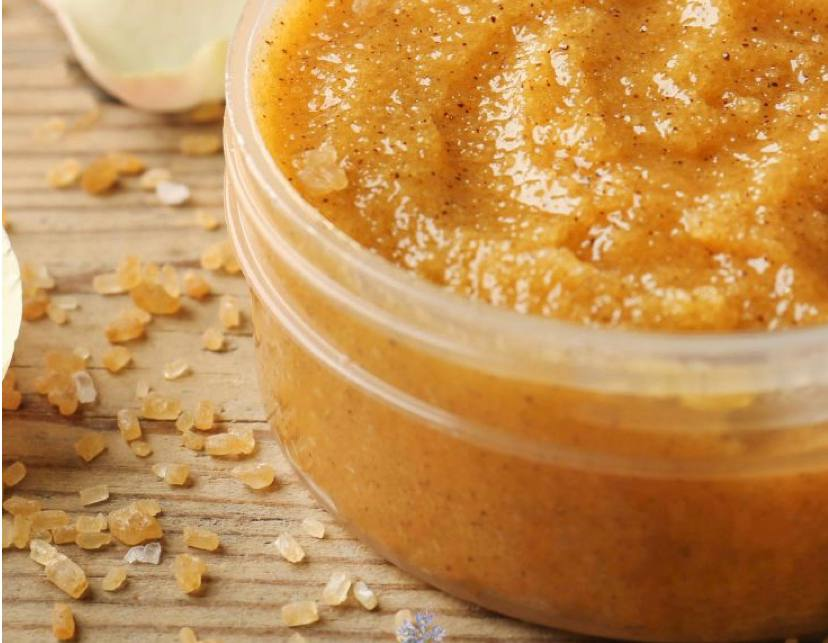
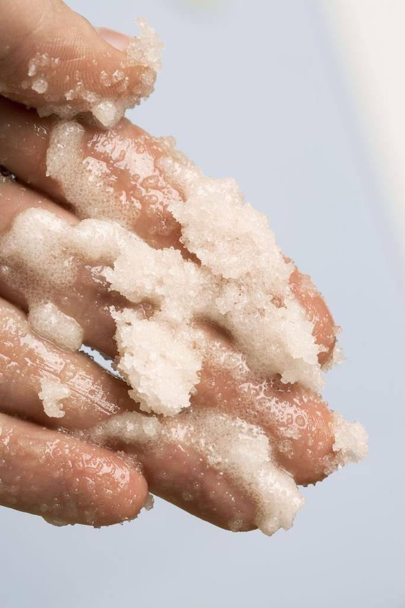
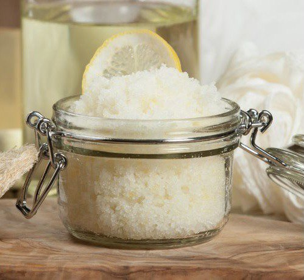

Beauty advice
уход за кожей и волосами в домашних условиях
⇐ на главную
Skrubs
❤ Скраб - это косметический продукт, который обязательно содержит в себе твёрдые частицы.
❤ В первую очередь, скраб для тела необходим для отшелушивания отмертвевших клеток кожи. Благодаря этой процедуре кожа становится более гладкой, чистой, а также улучшается циркуляция крови и происходит обновления эпидермиса.
❤ Скраб отлично помогает бороться с целлюлитом и отечностью, а так же предотвращает появление вросших волос.
❤ На очищенном скрабом участке кожи лучше работают другие косметические продукты (к примеру, крем или увлажняющий гель), а еще в разы лучше ложится загар.
❤ Как часто можно использовать скраб зависит непосредственно от его компонентов и от структуры кожи, однако в среднем рекомендуется применять средство не чаще 2-3 раз в неделю.
❤ Скрабировать тело стоит после принятия душа, когда кожа распарена от горячей воды и хорошо очищена. На влажную кожу следует нанести небольшое количество скраба и, массируя, распределить по телу. После средство необходимо смыть водой.

❤ Однако, несмотря на полезность процедуры, не всем следует ее делать, поскольку существует ряд противопоказаний.
❤ Очень важно отметить, что на повреждённой или раздраженной коже использовать скраб запрещено.
❤ Не рекомендуется использовать скраб чаще 1 раза в неделю-полторы для сухой кожи.
❤ Перед первым применением обязательно нужно нанести скраб на маленький участок кожи, чтоб убедиться в отсутствии аллергической реакции.
Ингредиенты:
❤ кофейный жмых - 65 гр.
❤ масло (на ваше усмотрение, за исключением подсолнечного) - 20 мл.
❤ эфирное масло - 3-4 капли по желанию
Для изготовления скраба следует смешать в ёмкости кофейный жмых, что остался после приготовления напитков, оливковое масло. По желанию добавить ваше любимое эфирное масло.
Ингредиенты:
❤ морская соль - 200 гр.
❤ жидкий мёд - 100 гр.
В соль необходимо добавить мёд, перемешать - и скраб готов. Благодаря своим ингридиентам, такой скраб отлично воздействует на кожу и оказывает детокс-действие.
Ингредиенты:
❤ сахар - 200 гр.
❤ молотая корица - 5 гр.
❤ апельсиновая кожура - 50 гр.
❤ масло (на ваше усмотрение, за исключением подсолнечного) - 60 гр.
❤ апельсиновое эфирное масло - 4-5 капель
В сахар добавляем масло и корицу. После необходимо натереть апельсин на мелкой терке. В среднем, понадобится 50 грамм, однако, если у вас получилось больше или меньше - подойдет и другое количество. Далее добавляем эфирное масло и перемешиваем все компоненты вместе.
Ингредиенты:
❤ морская соль - 200 гр.
❤ масло (на ваше усмотрение, за исключением подсолнечного) - 60 мл.
❤ эфирное масло - 4-5 капель по желанию
Чтобы сделать скраб необходимо смешать в баночке морскую соль и оливковое масло, по желанию добавить эфирное масло, которое вам нравится.
Ингредиенты:
❤ cахар - 200 гр.
❤ масло (на ваше усмотрение, за исключением подсолнечного) - 45 мл.
❤ эфирное масло - 4-5 капель по желанию
Для изготовления сахарного скраба нужно соединить вместе сахарный песок и масло, по желанию можно добавить эфирное масло.
Про скрабы
Кофейный скраб
Медово-солевой скраб
Апельсиновый скраб
Cкраб из морской соли
Сахарный скраб
With love to you...